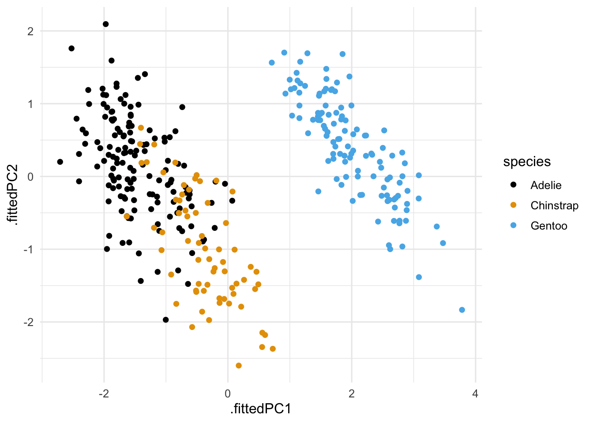

Lesson 9
Unsupervised Learning
Learning Objectives
After this lesson, students will be able to:
Describe the unsupervised learning methods of principal component analysis (PCA) and clustering.
Discuss the interpretations of PCA.
Use
tidymodelsandtidyclustfor PCA and clustering in practice.
Readings, etc.
For this lesson, refer to the following readings, etc.:
Read chapter 12 from of An Introduction to Statistical Learning (Tibshirani, James, and Trevor 2017). You may also want to read chapters 17, 20, 21, and 22 of Hands-On Machine Learning with R* (Boehmke and Greenwell 2019).
Overview
Unsupervised learning focuses on finding patterns in data without a response variable. This is in contrast to supervised learning where we have a response variable and are trying to predict it. Unsupervised learning is often used for exploratory data analysis (EDA) and data reduction. Some common questions that can be addressed via unsupervised learning include:
Is there an informative way to visualize the data?
Are there groups of observations that are similar to each other?
Can we discover subgroups of observations that are distinct from each other?
Unsupervised learning can be much more challenging than supervised learning because there isn’t necessarily a clear and simple goal such as prediction. Furthermore, there is a lack of established methods for evaluating the performance of an unsupervised learning method. That is, there isn’t really a way for us to check our work in unsupervised learning.
In this lesson, we will focus on two unsupervised learning methods: principal component analysis (PCA) and clustering. PCA is a data reduction technique that finds a low-dimensional representation of the data that captures as much of the variation in the data as possible. Clustering is a method that groups observations into clusters based on their similarity. We will use the tidymodels and tidyclust packages for PCA and clustering in practice.
Principal Component Analysis (PCA)
Suppose we have a large set of correlated variables. Principal component analysis (PCA) allows us to summarize this set with a smaller number of representative variables that collectively explain most of the variability in the original set. This is what we call dimension reduction. The principal component directions are the directions along which the original data vary the most. Often, the first few principal components are sufficient to summarize most of the variation in the data. This is particularly useful for data visualization. Another interpretation of principal components that is also very useful is: principal components provide low-dimensional linear surfaces that are closest to the observations.
We note that PCA is a matrix factorization of the data derived from a basic result in linear algebra known as the singular value decomposition (SVD). We will not go into the details of the SVD here, but we will discuss the results of the SVD and how they relate to PCA.
Clustering
Clustering refers to a very broad set of techniques for finding subgroups, or clusters, in a data set. When we cluster the observations of a data set, we seek to partition them into distinct groups so that the observations within each group are quite similar to each other, while observations in different groups are quite different from each other. There are many different clustering methods, some common ones include:
Both clustering and PCA seek to simplify the data via a small number of summaries, but their mechanisms are different:
PCA looks to find a low-dimensional representation of the observations that explain a good fraction of the variance;
Clustering looks to find homogeneous subgroups among the observations.
Principal Component Analysis (PCA)
Before we explain what principal components are, let’s consider an example data set. We will work with the four numerical columns from the penguins data set which we’ve stored in a data frame named penguins_X. The first few rows of penguins_X are shown below.
Code
penguins_X %>%
head() %>%
kable() %>%
kable_styling() %>%
scroll_box(width = "100%", height = "200px")| flipper_length_mm | body_mass_g | bill_length_mm | bill_depth_mm |
|---|---|---|---|
| 181 | 3750 | 39.1 | 18.7 |
| 186 | 3800 | 39.5 | 17.4 |
| 195 | 3250 | 40.3 | 18.0 |
| 193 | 3450 | 36.7 | 19.3 |
| 190 | 3650 | 39.3 | 20.6 |
| 181 | 3625 | 38.9 | 17.8 |
We can compute the PCA for this data using the prcomp function as follows:
penguins_pca <- prcomp(penguins_X, scale = TRUE)Let’s consider what is stored in the penguins_pca object. If we examine the object, we will see that it has to components: rotation and x. The rotation matrix will be of size \(4 \times 4\) while the \(x\) matrix will be the same size as the original data set which is \(333 \times 4\).
First, we can look at the rotation component which contains the principal component directions. Each column of rotation contains a principal component direction. The rotation matrix is shown below.
Code
penguins_pca$rotation %>%
kable() %>%
kable_styling() %>%
scroll_box(width = "100%", height = "200px")| PC1 | PC2 | PC3 | PC4 | |
|---|---|---|---|---|
| flipper_length_mm | 0.5768250 | -0.0057882 | 0.2360952 | -0.7819837 |
| body_mass_g | 0.5496747 | -0.0764637 | 0.5917374 | 0.5846861 |
| bill_length_mm | 0.4537532 | -0.6001949 | -0.6424951 | 0.1451695 |
| bill_depth_mm | -0.3990472 | -0.7961695 | 0.4258004 | -0.1599044 |
We can also look at the x component which contains the principal component scores. Each column of x contains the principal component scores for a given principal component direction. The first few rows of x are shown below.
Code
penguins_pca$x %>%
head() %>%
kable() %>%
kable_styling() %>%
scroll_box(width = "100%", height = "200px")| PC1 | PC2 | PC3 | PC4 |
|---|---|---|---|
| -1.850808 | -0.0320212 | 0.2345487 | 0.5276026 |
| -1.314276 | 0.4428603 | 0.0274288 | 0.4011230 |
| -1.374537 | 0.1609882 | -0.1894042 | -0.5278675 |
| -1.882456 | 0.0123327 | 0.6279277 | -0.4721826 |
| -1.917096 | -0.8163696 | 0.6999980 | -0.1961213 |
| -1.770356 | 0.3656727 | -0.0284177 | 0.5046092 |
Let’s see what happens when we multiply the \(x\) matrix by the transpose of the rotation matrix. The first few rows of the resulting matrix are shown below.
penguins_pca$x %*% t(penguins_pca$rotation) %>%
head() %>%
kable() %>%
kable_styling() %>%
scroll_box(width = "100%", height = "200px")| flipper_length_mm | body_mass_g | bill_length_mm | bill_depth_mm |
|---|---|---|---|
| -1.4246077 | -0.5676206 | -0.8946955 | 0.7795590 |
| -1.0678666 | -0.5055254 | -0.8215515 | 0.1194043 |
| -0.4257325 | -1.1885721 | -0.6752636 | 0.4240910 |
| -0.5684290 | -0.9401915 | -1.3335592 | 1.0842457 |
| -0.7824736 | -0.6918109 | -0.8581235 | 1.7444004 |
| -1.4246077 | -0.7228585 | -0.9312674 | 0.3225288 |
Now, we will see that the previous result is related to the original data set. The first few rows of the normalized original data set are shown below.
penguins %>%
select(flipper_length_mm, body_mass_g, bill_length_mm, bill_depth_mm) %>%
scale() %>%
head() %>%
kable() %>%
kable_styling() %>%
scroll_box(width = "100%", height = "200px")| flipper_length_mm | body_mass_g | bill_length_mm | bill_depth_mm |
|---|---|---|---|
| -1.4246077 | -0.5676206 | -0.8946955 | 0.7795590 |
| -1.0678666 | -0.5055254 | -0.8215515 | 0.1194043 |
| -0.4257325 | -1.1885721 | -0.6752636 | 0.4240910 |
| -0.5684290 | -0.9401915 | -1.3335592 | 1.0842457 |
| -0.7824736 | -0.6918109 | -0.8581235 | 1.7444004 |
| -1.4246077 | -0.7228585 | -0.9312674 | 0.3225288 |
What we have just discovered, at least for this example is that the principal component analysis is a factorization of our data matrix into a product of two matrices. The first matrix is the \(x\) matrix which contains what we call the principal components or scores. The second matrix is the transpose of the rotation matrix which contains the principal component directions or what are sometimes called the loadings. The product of these two matrices is equal to the normalized original data set.
There is some additional information stored in the penguins_pca object. We can see the proportion of variance explained by each principal component direction using the summary function as follows:
summary(penguins_pca)Importance of components:
PC1 PC2 PC3 PC4
Standard deviation 1.6569 0.8821 0.60716 0.32846
Proportion of Variance 0.6863 0.1945 0.09216 0.02697
Cumulative Proportion 0.6863 0.8809 0.97303 1.00000The proportion of variance explained by each principal component direction provides information about how much of the information in the original data set is captured using each principal component direction. We see that for our data, a very large proportion of the variance is explained by the first two principal components. Let’s add the principal components to the original data set and plot the first two principal components against each other.
penguins_pca %>%
augment(penguins) %>%
ggplot(aes(x = .fittedPC1, y = .fittedPC2, color = species)) +
geom_point() +
scale_color_colorblind()
From Figure 1, we see that the first two principal components do a good job of separating the penguins by species.
Singular Value Decomposition (SVD)
The singular value decomposition (SVD) of a matrix is a very important result in linear algebra and is used in many different applications. We will not go into the details of the SVD here, but we will discuss the results of the SVD and how they relate to PCA.
penguins_X %>%
scale() %>%
svd() %>%
.$v %>%
kable() %>%
kable_styling() %>%
scroll_box(width = "100%", height = "200px")| 0.5768250 | -0.0057882 | 0.2360952 | -0.7819837 |
| 0.5496747 | -0.0764637 | 0.5917374 | 0.5846861 |
| 0.4537532 | -0.6001949 | -0.6424951 | 0.1451695 |
| -0.3990472 | -0.7961695 | 0.4258004 | -0.1599044 |
How PCA Works
Clustering
k-means Clustering
Hierarchical Clustering
References
Boehmke, Brad, and Brandon M Greenwell. 2019. Hands-on Machine Learning with r. CRC press.
Tibshirani, Hastie Robert, Gareth James, and Daniela Witten Trevor. 2017. An Introduction to Statistical Learning. springer publication.
Expand for Session Info
─ Session info ───────────────────────────────────────────────────────────────
setting value
version R version 4.3.1 (2023-06-16)
os macOS Sonoma 14.1
system aarch64, darwin20
ui X11
language (EN)
collate en_US.UTF-8
ctype en_US.UTF-8
tz America/New_York
date 2023-11-01
pandoc 3.1.9 @ /opt/homebrew/bin/ (via rmarkdown)
quarto 1.3.450 @ /usr/local/bin/quarto
─ Packages ───────────────────────────────────────────────────────────────────
package * version date (UTC) lib source
broom * 1.0.5 2023-06-09 [1] CRAN (R 4.3.0)
dials * 1.2.0 2023-04-03 [1] CRAN (R 4.3.0)
dplyr * 1.1.3 2023-09-03 [1] CRAN (R 4.3.0)
forcats * 1.0.0 2023-01-29 [1] CRAN (R 4.3.0)
ggplot2 * 3.4.4 2023-10-12 [1] CRAN (R 4.3.1)
ggthemes * 4.2.4 2021-01-20 [1] CRAN (R 4.3.0)
infer * 1.0.5 2023-09-06 [1] CRAN (R 4.3.0)
ISLR2 * 1.3-2 2022-11-20 [1] CRAN (R 4.3.0)
kableExtra * 1.3.4 2021-02-20 [1] CRAN (R 4.3.0)
lubridate * 1.9.3 2023-09-27 [1] CRAN (R 4.3.1)
modeldata * 1.2.0 2023-08-09 [1] CRAN (R 4.3.0)
parsnip * 1.1.1 2023-08-17 [1] CRAN (R 4.3.0)
purrr * 1.0.2 2023-08-10 [1] CRAN (R 4.3.0)
readr * 2.1.4 2023-02-10 [1] CRAN (R 4.3.0)
recipes * 1.0.8 2023-08-25 [1] CRAN (R 4.3.0)
rsample * 1.2.0 2023-08-23 [1] CRAN (R 4.3.0)
scales * 1.2.1 2022-08-20 [1] CRAN (R 4.3.0)
sessioninfo * 1.2.2 2021-12-06 [1] CRAN (R 4.3.0)
stringr * 1.5.0 2022-12-02 [1] CRAN (R 4.3.0)
tibble * 3.2.1 2023-03-20 [1] CRAN (R 4.3.0)
tidymodels * 1.1.1 2023-08-24 [1] CRAN (R 4.3.0)
tidyr * 1.3.0 2023-01-24 [1] CRAN (R 4.3.0)
tidyverse * 2.0.0 2023-02-22 [1] CRAN (R 4.3.0)
tune * 1.1.2 2023-08-23 [1] CRAN (R 4.3.0)
workflows * 1.1.3 2023-02-22 [1] CRAN (R 4.3.0)
workflowsets * 1.0.1 2023-04-06 [1] CRAN (R 4.3.0)
yardstick * 1.2.0 2023-04-21 [1] CRAN (R 4.3.0)
[1] /Library/Frameworks/R.framework/Versions/4.3-arm64/Resources/library
──────────────────────────────────────────────────────────────────────────────
Reuse
CC BY-NC-SA 4.0